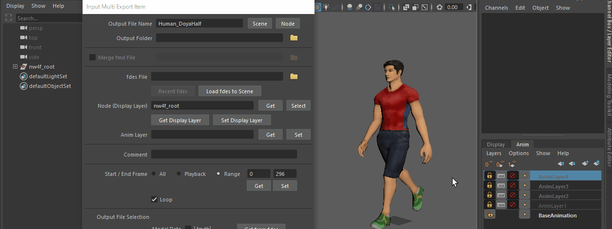

This page describes the Nintendo Multi Export plug-in UI.
Note
This document might not be up to date. See the following page for the latest information about the multi-export plug-in.
Related Link Multi-Export Plug-In
Main Window
| Figure |
Description |
|
|
You can change the order, replace item names, and import or export settings.
Detailed Description (Click to expand)
| Item |
Description |
| Sort |
You can sort export items with specific option values.
|
| Replace |
You can batch-replace the option settings for export items. |
| Settings |
The following operations can be performed from the menu.
| Import Settings from ndmes File |
Imports the export item settings from the NDMES file.
When there are existing export items, the settings are added after these items. |
| Export All Settings to ndmes File |
Exports all export item settings to the NDMES file. |
| Export Selected Settings to ndmes File |
Exports the settings for the export item selected in the list (multiple items can be selected) to the NDMES file. |
Import/export multi-export settings
|
| Help |
Opens the Help documentation. |
|
|
|
You can add items to the list, duplicate them, or sort them.
Detailed Description (Click to expand)
| Item |
Description |
|
Up
Down
|
You can change the order in which selected items appear in the list. |
| Add... |
You can add a new export item.
|
| Duplicate |
You can duplicate the selected export item.
|
| Delete |
You can delete the selected export item. |
| Edit |
You can change the setting made for an existing export item by clicking Edit or by double-clicking the item.
(Opens the Input Multi Export Item window.) |
| Set Playback |
Changes the animation playback range used by Maya so that the animation is played for the range specified in Start / End Frame in the selected export item. |
| Undo |
Restores the state prior to the last action. (If the last action was one other than the multi-export plug-in, it is also undone.) Right-click the Undo button, and use the displayed Redo menu to perform the action that was undone. |
| Column Width |
- You can adjust the list column width that you selected in Column Width using the slider on the right.
|
Related Links Main Window
|
|
|
Displays a list of items.
Detailed Description (Click to expand)
A list of export items set for the current scene is displayed in the window that appears.
| Item |
Description |
| Output File Name |
The name of the intermediate file to be exported. |
| fdes File |
The name of the FDES file to be used. |
| Node (Display Layer) |
The name of the node to export (display layer name).
|
| Comment |
Comment text for the intermediate file. |
| Start End |
The range to which an animation is exported. |
| Loop |
The loop playback flag. |
| Selection |
Export flags for each intermediate file. The following letters are shown if they are enabled.
M: FMDB file
T: FTXB file
S: FSKB file
V: FVBB file
C: Color animation intermediate file (FMAB or FCLB file)
R: Texture SRT animation intermediate file (FMAB or FTSB file)
P: Texture pattern animation intermediate file (FMAB or FTPB file)
H: FSHB file
N: FSNB file |
| Options |
Additional options. |
Related Links Main Window
■ Video of Basic Operations
■
Video of Animation Layers
|
|
|
- Click the Export Selected Items button to export the selected export items.
- You can export all export items by clicking Export All Items.
|
|
|
You can operate registered items from the shortcut menu.
Detailed Description (Click to expand)
| Item |
Description |
|
Select Node
|
Selects the node exported by the item within Maya. This menu item is available when a value has been entered in Node (Display Layer). |
| Set Display Layer |
Only the display layers to be exported are displayed in the export items in Maya. This menu item is available when a display layer name has been specified in Node (Display Layer). |
| Get Anim Layer |
Gets the active animation layer in Maya and sets it as an Anim Layer export item. This menu item is available when there are animation layers. |
| Load FDES to Scene |
Loads the FDES file settings of the item into the scene and opens the export plug-in options window. (If the FDES file path is blank, options from the current scene are displayed.)
|
| Set Playback Range |
Changes the animation playback range used by Maya such that the animation is played for the range specified in Start / End Frame in the export item. |
| Get from Playback Range |
Sets Start / End Frame for the export item by getting the animation playback range on Maya. |
| Get from Selected Clip |
Sets the Start / End Frame for the export item by getting the range containing all clips selected in the Time Editor. This menu item is available when clips have been created.
|
| Move Start / End Frame... |
Moves Start / End Frame for the export item. (Multiple items can be selected.) To move the frames, specify the translation value (an integer) to add to Start / End Frame in the window and click the Move button. Negative values can be set for the translation value. Start/End Frame must be a range or the frames will not move. |
|
Input Export Items Window
Related Links Input Export Items Window
| Figure |
Description |
|
|
Displays whether ToolClip is enabled or disabled.
You can check whether it is displayed in Maya > Windows > Settings/Preferences > Preferences > Help > ToolClip.
Output File Name: Enter the name of the intermediate file to be exported (excluding its extension).
Output Folder: Enter the folder to which to export intermediate files.
Merge fmd File: Select this option and specify an FMD file path to merge the specified FMD files.
Detailed Description (Click to expand)
| Output File Name |
Enter the filename of the intermediate file to be exported (excluding its extension).
If left blank, the current scene name is used for the intermediate filename.
Enter @node to include the name of the output destination node (the uppermost node in the hierarchy if there are multiple), specified in Node (Display Layer), in the intermediate file name. If a display layer is specified in Node (Display Layer), the node names included in the display layer are also displayed.
To enter the current scene name, on the right, click Scene.
Click Node to enter the name for the node currently selected in Maya (or the highest node in the hierarchy if more than one is selected).
|
| Output Folder |
Enter the folder to which to output intermediate files.
If this setting is left blank, the settings of the FDES file are used. (If the File setting in the FDES file is also blank, the current scene's settings are used instead.)
If the specified path is not a full path, the system treats it as a relative path from the current project folder.
You can use environment variables (of the form %NAME% or $NAME) for the file path. |
| Merge fmd File |
Select this option and specify an FMD file path to merge the specified FMD files.
If the path is left blank, the export file to be overwritten is merged.
If the specified path is not a full path, it is treated as a relative path from the current project folder.
You can use environment variables (of the form %NAME% or $NAME) for the file path. |
Related Links
Input Export Items Window
|
|
|
fdes File: Enter the path to the FDES file you are using.
Node (Display Layer): Enter the name of the node to export.
Anim Layer: To enable and export a particular animation layer, enter the name of the animation layer to enable.
Detailed Description (Click to expand)
fdes File
|
Enter the path to the FDES file you are using.
If left blank, the current scene's option settings are used for export. An error occurs if option settings are not saved in the scene.
If the specified path is not a full path, the system treats it as a relative path from the current project folder.
If a full path has been entered and it is a path within the current project folder, it is converted to a relative path when you click OK.
You can use environment variables (of the form %NAME% or $NAME) for the file path.
Output is skipped if there is no FDES file in the specified path.
You can also specify the FDES file in the presets folder. Normally, the FDES file in the presets folder is preset="". The default is to process as if there is no preset. You can use the config file to change the process to use this preset name for the FDES file. (This feature is available in NintendoSDK 11.3.0 and later.) It is used for branching the processing of Pre-Export Script and Post-Export Script based on the preset name.
You can select an FDES file from the history of recently imported FDES files by clicking Recent fdes at the bottom.
Click Load fdes to Scene to load the settings from the FDES file entered into the scene and display an export plug-in option window. (Option settings for the current scene are displayed if the path is left blank.)
|
Node (Display Layer)
|
To export a particular node, enter the name of the node to export. (Nodes in the hierarchy below this entered node are also exported.)
You can also enter the name for the display layer to export. (All nodes below the nodes included in the display layer are also exported.)
You can enter multiple node names (or display layer names) by separating them with spaces.
You do not need to enter anything if the FDES file is being used to export the entire scene.
Also, even if the FDES file is configured to export the entire scene, if a node name (display layer name) is entered, only the entered node (display layer) is exported.
If you entered a display layer name and the display layer is hidden during export, it is temporarily displayed for export.
Click Get, located on the right, to enter the name of the node currently selected in Maya.
Click the Select button to select the entered node within Maya. (If you entered a display layer name, all nodes included in the display layer are selected.)
Click the Get Display Layer button, located on the bottom, to enter the name of a visible, non-template display layer into Maya.
Click the Set Display Layer button to make only the entered display layer visible in Maya. |
Anim Layer
|
To enable and export a particular animation layer, enter the name of the animation layer to enable.
You can enter multiple animation layers by separating them with spaces.
If any of these animation layers have parents, the parent animation layers are also activated.
Enter BaseAnimation to deactivate all non-base animation layers.
If this setting is left blank, BaseAnimation or the currently active animation layer is exported. (Select in the config file.)
To enter the names of the currently active animation layers into Maya, click Get on the right.
Click Set to activate only the entered animation layers within Maya. |
Related Links For more information, see Input Export Items Window.
■ Node Registration Video
■ Display Layer Registration Video
■ Anim Layer Registration Video
|
|
|
Include comments about editing the intermediate file.
If left blank, the editing comment specified in the FDES file will be used.
|
|
|
Specify the range (start frame and end frame) of the animation.
Sets the loop playback flag.
Detailed Description (Click to expand)
This setting works the same way as the Start / End Frame option of the Export plug-in.
Click Get, located on the bottom, to enter the playback range value being used by Maya for the animation.
Click Set to change the animation playback range being used by Maya so that the range entered is played back.
Click the Get Clip button to enter the value for the range containing all clips selected in the Time Editor. (This button is only displayed if clips have been created.)
Sets the loop playback flag.
Select this option to export the data as looped playback data.
If this option is cleared, the animation range is exported as one-time playback data
Related Links For more information, see Input Export Items Window.
|
|
|
Sets an export flag for each intermediate file.
Click Get from fdes to export only the intermediate files that are set for export using the specified FDES file in fdes File. (If the path is left blank, all intermediate files set for output in the current scene are enabled for export.)
|
|
|
Specifies additional options using the same format used in the third argument of NintendoExportByFdes3.
Detailed Description (Click to expand)
Click the Edit button to display the Edit Additional Options window, which can be used to specify additional options in the UI.
You can enter multiple options either on a single line or by using returns and entering them on multiple lines.
These additional options take priority over the options specified in the FDES files. (If the preset locked in the options of the FDES file is any value except None, the setting in the FDES file option settings takes precedence.)
Related Links For more information, see Input Export Items Window.
|
|
|
OK: Confirm the current settings and close the window.
Cancel: Cancel any changes made and close the window.
|
Operations
Basic Operations
This is a video of the basic operations.
Use Up and Down to move through the list, and Undo to go back.
Set Maya for the registered animation segment with Set Playback. (The same operations can be performed by right-clicking the list.)
Adjust the width of lists with Column Width.
Animation Layer Operations
This is a video of operating animation layers.
If you make a selection in the list, it switches to the animation layers from when that was registered. (The name of the selected animation layer appears below the list frame.)
You can adjust the selected layers and weight and register them again using Get Anim Layer from the shortcut menu.
Node Registration
From Node (Display Layer), you can register selected nodes using Get. (You can select several.)
You can restore the selected state in Maya with Select.
Display Layer Registration
You can register the displayed layer using Get Display Layer.
You can restore the display state in Maya with Set Display Layer.
Anim Layer Registration
You can register the selected animation layer using Get.
You can restore the animation layer selection state in Maya with Set.

When you select the registration list of the Nintendo Multi Export window, the animation layers of the selected item are Set.